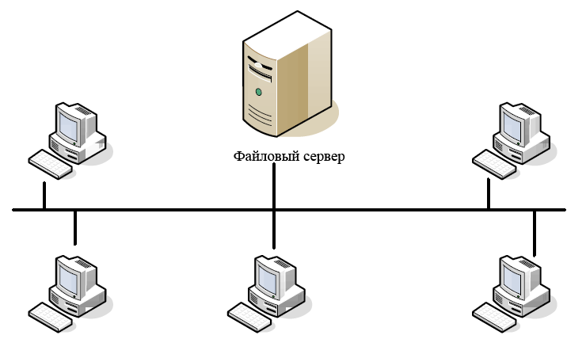
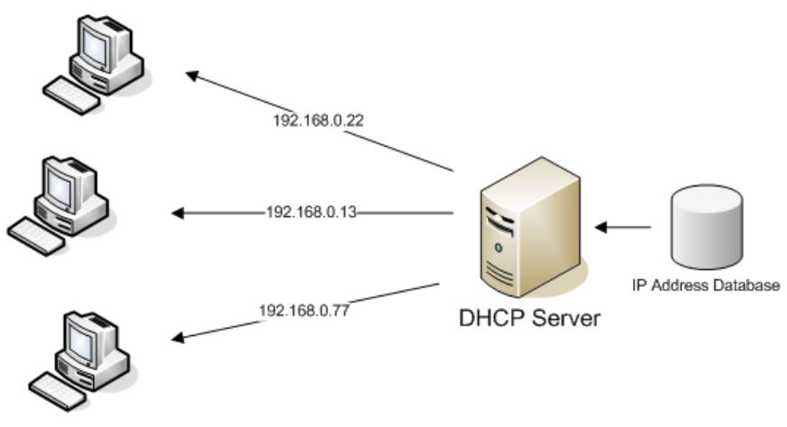
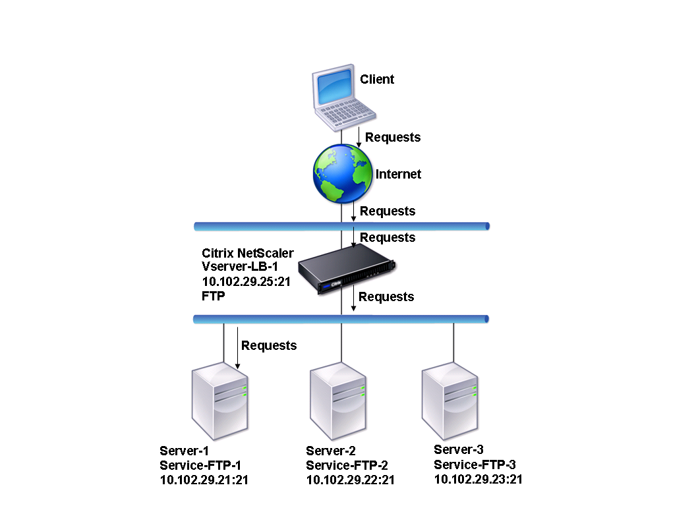
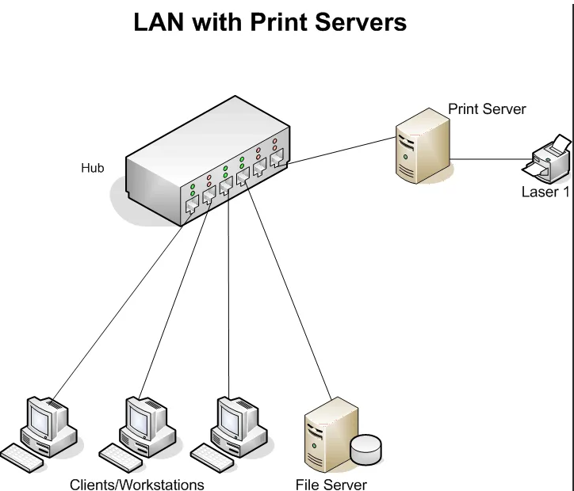

1.Понятие сервера. Классификация серверов. Принципы разделения между клиентскими и серверными частями. Типовое разделение функций
Сервер - это программный компонент вычислительной системы, выполняющий сервисные (обслуживающие) функции по запросу клиента, предоставляя ему доступ к определённым ресурсам или услугам.
Клиент — это аппаратный или программный компонент вычислительной системы, посылающий запросы серверу.
Классификация серверов
Классифицироваться по системной архитектуре и набору команд:
CISC (Complex Instruction Set Computing)
RISC (Reduced Instruction Set Computing)
EPIC (Explicitly Parallel Instruction Computing)
В первую категорию входят Intel x86 и совместимые системы – так называемые серверы стандартной архитектуры, доминирующие на современном рынке. RISC-серверы выпускают такие вендоры как IBM (процессоры POWER) и Oracle (SPARC). Обычно это серверы среднего класса для требовательных к ресурсам приложений. Системы EPIC (например, Intel Itanium) позволяют распараллеливать вычисления.
Классификация серверов – по назначению, выполняемым функциям или ролям.
Сервер рабочей группы.

Рис.1.1 Сервер рабочей группы
Представляет собой систему начального уровня, как правило, однопроцессорный. Небольшие компании и удаленные офисы не имеют выделенного специального помещения и располагают сервер непосредственно в своем офисе. Такая система должна как можно меньше привносить шум в офисное помещение. По функциям, такая машина служит для разграничения прав доступа сотрудников к файловым ресурсам либо служит как емкость для хранения общих данных.
Сервер контроллер домена, Domain Controller server.

Рис.1.2 Сервер контроллер домена
Необходим в организации с количеством сотрудников более 20 рабочих мест, позволяет централизованно управлять сетевыми и файловыми ресурсами компании, также обычно выполняет роль сервера печати. DC server должен быть уже на порядок качественнее и надежнее в отличии от сервера рабочей группы, иметь возможность масштабирования при росте количества пользователей локальной сети. Производительность его зависит от масштаба компании, обычно это одно- двухпроцессорный узел, под управлением MS Windows Server 2003-2008 с настроенной службой каталогов Active Directory.
Прокси Сервер - шлюз в Интернет.

Рис.1.3 Прокси Сервер
В этой роли серверная машина обеспечиваюет общий доступ в интернет всем (или определенным компьютерам офиса) безопасную работу сотрудников в Интернете. В случае, если бизнес компании жестко связан с работой сотрудников во внешней сети, такой шлюз должен быть не только отказоустойчивым, но и достаточно производительным: работа специального программного обеспечения (антивирусных программ, анализ и учет трафика, анализаторы атак и т.п.) может требовать большого количества системных ресурсов и высокоскоростных интерфейсов связи.
Сервер электронной почты. Mail Server.

Рис.1.4 Сервер электронной почты.
Выделенный узел для обработки почтовых приложений может иметь потребность у организации с численностью сотрудников 30-40 человек и позволяет централизованно управлять внешней корреспонденцией, внутренней перепиской и документооборотом. Серверные версии антивирусных программ и грамотно настроенные фильтры снизят риск потери или утечки конфиденциальной информации и уменьшат объемы нежелательной почты.
Веб сервер, сервер web приложений.

Рис.1.5 Веб сервер.
Многие современные компании и организации имеют свой виртуальный офис или магазин в сети Интернет WEB-сайт. Сайт может быть простым и служить лишь визитной карточкой компании, либо более сложным – порталом, онлайн каталогом с возможностью оформления заказов от клиентов. Бизнес процесс многих компаний в современном мире полностью зависим от работы WEB служб, а в нашем случае от веб сервера, его доступность и отказоустойчивость, возможность противостоять внешним негативным воздействиям, атакам и попыткам взлома, достаточной производительностью для сотни или тысячи одновременно принимаемых запросов из сети. Выделенный узел для веб приложений позволит обеспечить доступ большому количеству посетителей, гарантировать работу сложных, критически важных веб приложений компании.
Терминальный сервер.

Рис.1.6 Терминальный сервер.
Работу удаленных офисов, мобильных пользователей и сотрудников, часто работающих из дома или в командировке, с обеспечением привычного доступа к рабочим ресурсам посредством сети Интернет или выделенных каналов связи способен обеспечить терминальный сервер. Шифрование передаваемых данных обеспечивает безопасность такого вида связи. Пользователь соединяется через канал связи с сервером, вводит свои учетные данные и попадает на свой виртуальный рабочий стол, или документам. Эта служба удобна тем что важные данные хранятся непосредственно на сервере, и доступ к ним можно получить из любой точки мира, был бы там лишь доступ в интернет! Также позволяет использовать программу 1С удаленно из любой точки планеты, при налифии интернет канала.
Сервер баз данных. Database server.

Рис.1.7 Сервер баз данных.
Следующая роль следует из названия - обработка данных, организованных и структурированных согласно определенным правилам и хранимых совместно. Наиболее часто используемые средства управления данными это MS SQL Server, Oracle, Apache, MySql. В случае потребности бизнес процессов компании в подготовке и обработке данных необходим выделенный вычислительный ресурс. Как правило, параметры такого узла напрямую зависят от масштаба базы данных, количества пользователей, динамики и характера обращений к данным. Важность бизнес приложения связанного с обработкой данных в жизни компании определяет необходимый уровень доступности данных, т.е. отказоустойчивости и надежности такой системы.
Файловый сервер.

Рис.1.8 Файловый сервер.
Предназначен для организации и структурированного хранения данных пользователей с учетом политик безопасности и доступа. Количество пользователей и объем хранимых данных являются определяющими моментами при определении состава такой системы
Серверы приложений.

Рис.1.9 Серверы приложений.
Для сервера приложений характерны расширенные возможности обработки информации, а взаимодействие с клиентом становится подобным работе приложения. В маркетинге термином «сервер приложений» обычно обозначают предлагаемое продавцами комплексное решение, которое содержит все требуемые компоненты технологий. Для некоторых организаций такой комплексный подход к построению сервера приложений облегчает разработку благодаря унификации разрабатываемых моделей и централизации поддержки. «Беспроводной» сервер В своей простейшей интерпретации такой компьютер может представлять собой типичный Web-сервер или сервер приложений, который просто знает, как передавать документы, составленные на стандартном для беспроводных устройств языке. Часто в качестве такого языка выступает Wireless Markup Language (WML). Адаптация Web-сервера для работы в качестве беспроводного сервера, способного обрабатывать документы WML-типа, обычно сводится просто к тому, чтобы обучить сервер распознаванию этих документов. Web-серверу требуется только сообщить клиенту, что документ составлен в формате для беспроводных устройств, и на этом его работа заканчивается.
Брандмауэры, файрволлы.

Рис.1.10 Брандмауэры, файрволлы.
Опять заморские выражения, если еще не знаете что это давайте по-русски. Это защитный экран от вредоносных воздействий из интернета, стена в одну строну пропускает исходящие данные, а в обратную (на прием) уже анализирует что именно поступает в сеть, определяя вредоносные данные, отсеивает их из общего потока входящей информации, что в настоящем времени является очень актуальной защитой от вирусов и атак из интернета. Прокси-серверы можно сконфигурировать так, что они будут принимать или отвергать определенные типы сетевых запросов, поступающие как из локальной сети, так и из Интернета. В такой конфигурации прокси-сервер становится межсетевым экраном — брандмауэром. Брандмауэр, как и подразумевает его «боевое» имя, представляет собой средство обеспечения безопасности, задачи которого во многом схожи с работой пограничников: осматривать каждый фрагмент данных, который пытается пересечь границу сети.
Серверы DHCP

Рис.1.11 Серверы DHCP.
В настоящее время во многих локальных сетях (интрасетях) также используется протокол TCP/IP, но иногда применяются и оригинальные протоколы обмена, такие, как NetBEUI или AppleTalk. IP-адрес компьютерам можно присваивать вручную, или же на одной из машин запускается так называемый сервер DHCP (Dynamic Host Configuration Protocol), который автоматически присваивает IP-адрес каждой локальной машине. Основное преимущество сервера DHCP — свобода изменения конфигурации локальной сети при ее расширении, добавлении или удалении машин (например, портативных ПК).
Серверы FTP

Рис.1.12 Серверы FTP.
Подобные серверы, работающие на основе протокола File Transfer Protocol, уже много десятилетий назад стали стандартом де-факто при перемещении файлов в Интернете. FTP-серверы поддерживают работу простых файловых менеджеров — клиентов. Сложные FTP-серверы обеспечивают администратору большие возможности управления в том, что касается прав на подключение и совместного использования файлов, типов разделяемых файлов и их размещения. Конфигурируемые ресурсы, выделяемые ряду соединений с сервером, ограничения на количество передаваемых данных и минимальную скорость передачи и т.п., становятся все более популярными средствами, помогающими повысить безопасность FTP-серверов.
Принт-серверы

Рис.1.13 Принт-серверы.
Такие серверы позволяют всем подключенным к сети компьютерам распечатывать документы на одном или нескольких общих принтерах. В этом случае отпадает необходимость комплектовать каждый компьютер собственным печатающим устройством. Кроме того, принимая на себя все заботы о выводе документов на печать, принт-сервер освобождает компьютеры для другой работы. Например, принт-сервер хранит посланные на печать документы на своем жестком диске, выстраивает их в очередь и выводит на принтер в порядке очередности.
Домашний сервер
В связи с тем, что компьютерная техника имеет очень доступную цену, и проникает повсюду, а также современные операционные системы имеют серверные возможности. С их помощью можно предоставлять пользователям других (соседних) компьютеров доступ к данным на жестком диске или к принтеру, а также «делиться» каналом интернета. Кроме того, домашний сервер можно использовать для резервного хранения данных или, сделав его доступным через Интернет, работать с документами на нем с любого ПК, подключенного к глобальной Сети. «Поднять» домашний сервер для хранения файлов и разделения доступа к Интернету не так сложно, как может показаться неискушенному пользователю. Для этой цели можно использовать обычный компьютер, даже без монитора. Для файлового или простого веб-сервера достаточно компьютера с процессором не слабее Intell Pentium 4 или AMD Sempron, оперативной памятью объемом 512 Мб и приводом CD-ROM. Если же на компьютере планируется запуск игрового сервера (весьма популярная инициатива в небольших локальных сетях), потребуется машина помощнее.
Принципы взаимодействия между клиентскими и серверными частями
Доступ к базе данных от прикладной программы или пользователя производится путем обращения к клиентской части системы. В качестве основного интерфейса между клиентской и серверной частями выступает язык баз данных SQL.
Это язык по сути дела представляет собой текущий стандарт интерфейса СУБД в открытых системах. Собирательное название SQL-сервер относится ко всем серверам баз данных, основанных на SQL. Соблюдая предосторожности при программировании, некоторые из которых были рассмотрены на предыдущих лекциях, можно создавать прикладные информационные системы, мобильные в классе SQL-серверов.
Серверы баз данных, интерфейс которых основан исключительно на языке SQL, обладают своими преимуществами и своими недостатками. Очевидное преимущество - стандартность интерфейса. В пределе, хотя пока это не совсем так, клиентские части любой SQL-ориентированной СУБД могли бы работать с любым SQL-сервером вне зависимости от того, кто его произвел.
Недостаток тоже довольно очевиден. При таком высоком уровне интерфейса между клиентской и серверной частями системы на стороне клиента работает слишком мало программ СУБД. Это нормально, если на стороне клиента используется маломощная рабочая станция. Но если клиентский компьютер обладает достаточной мощностью, то часто возникает желание возложить на него больше функций управления базами данных, разгрузив сервер, который является узким местом всей системы.
Одним из перспективных направлений СУБД является гибкое конфигурирование системы, при котором распределение функций между клиентской и пользовательской частями СУБД определяется при установке системы.
Преимущества протоколов удаленного вызова процедур
Упоминавшиеся выше протоколы удаленного вызова процедур особенно важны в системах управления базами данных, основанных на архитектуре "клиент-сервер".
Во-первых, использование механизма удаленных процедур позволяет действительно перераспределять функции между клиентской и серверной частями системы, поскольку в тексте программы удаленный вызов процедуры ничем не отличается от удаленного вызова, и следовательно, теоретически любой компонент системы может располагаться и на стороне сервера, и на стороне клиента.
Во-вторых, механизм удаленного вызова скрывает различия между взаимодействующими компьютерами. Физически неоднородная локальная сеть компьютеров приводится к логически однородной сети взаимодействующих программных компонентов. В результате пользователи не обязаны серьезно заботиться о разовой закупке совместимых серверов и рабочих станций.
Типичное разделение функций между клиентами и серверами
В типичном на сегодняшний день случае на стороне клиента СУБД работает только такое программное обеспечение, которое не имеет непосредственного доступа к базам данных, а обращается для этого к серверу с использованием языка SQL.
В некоторых случаях хотелось бы включить в состав клиентской части системы некоторые функции для работы с "локальным кэшем" базы данных, т.е. с той ее частью, которая интенсивно используется клиентской прикладной программой. В современной технологии это можно сделать только путем формального создания на стороне клиента локальной копии сервера базы данных и рассмотрения всей системы как набора взаимодействующих серверов.
С другой стороны, иногда хотелось бы перенести большую часть прикладной системы на сторону сервера, если разница в мощности клиентских рабочих станций и сервера чересчур велика. В общем-то при использовании RPC это сделать нетрудно. Но требуется, чтобы базовое программное обеспечение сервера действительно позволяло это. В частности, при использовании ОС UNIX проблемы практически не возникают.